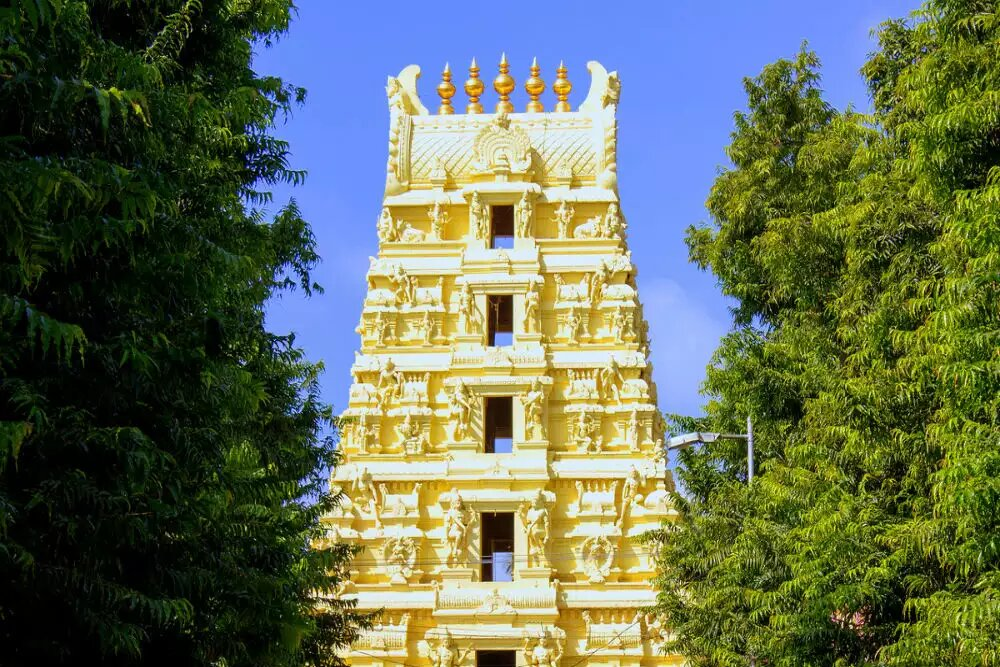
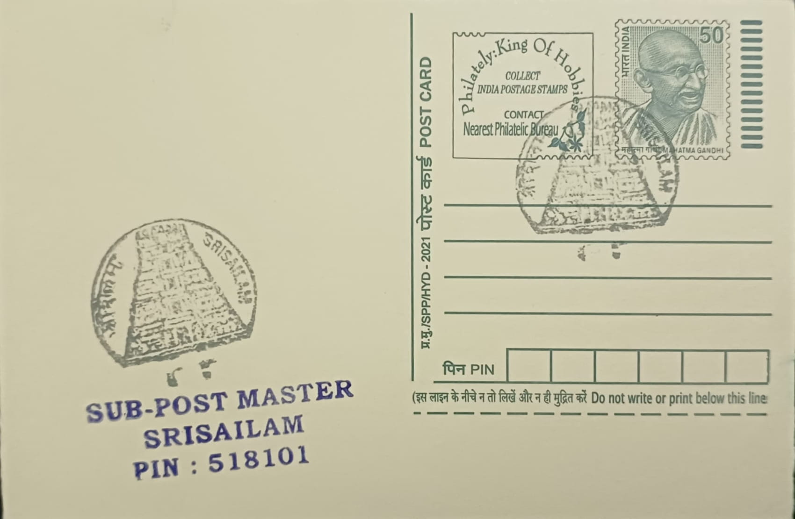
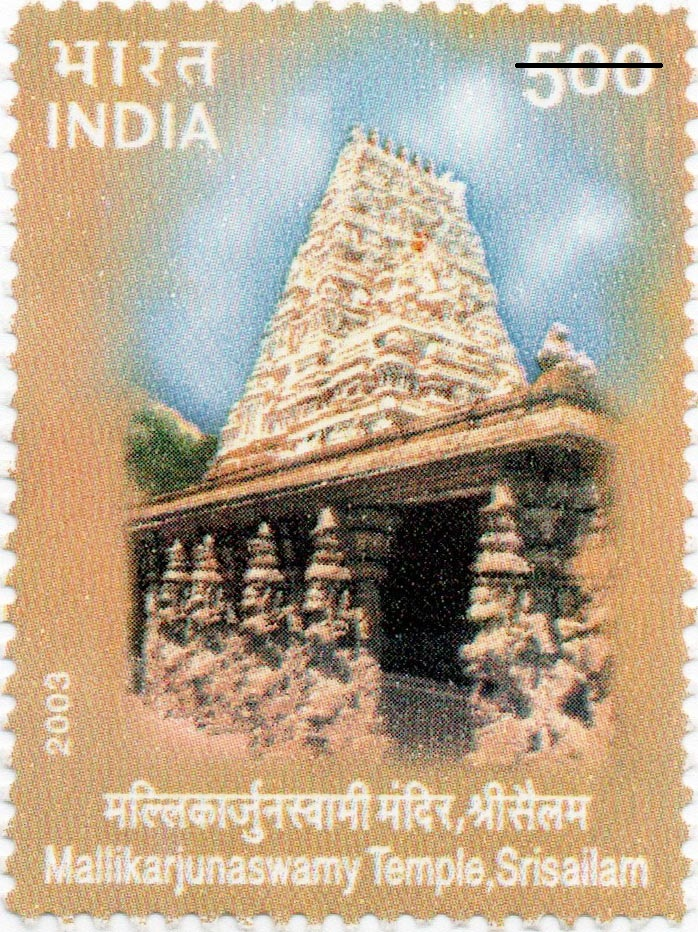
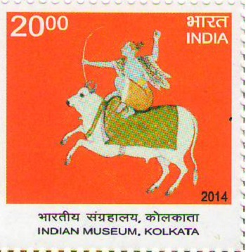
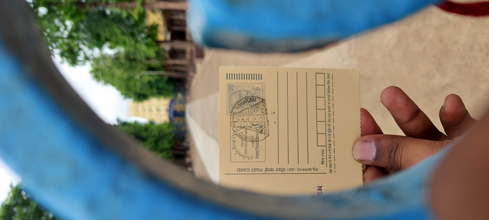

The Mallikarjuna Swamy Temple in Srisailam is a deeply revered shrine in Indian spiritual history, intricately linked to legends of divine love and valor. According to mythology, it is the site where Lord Shiva appeared as Mallikarjuna, accompanied by Goddess Parvati as Bhramaramba, to bless their son Kartikeya. The temple also commemorates Parvati's battle against the demon Mahishasura, where she took the form of Bhramaramba to vanquish evil. These myths not only add to the temple's mystique but emphasize the themes of devotion and righteousness.
The temple holds a distinguished position in Hinduism, as it is both a Jyotirlinga and a Shakti Peetha. Jyotirlingas are the twelve most sacred shrines of Lord Shiva, while Shakti Peethas are places where parts of Goddess Sati are believed to have fallen, imbuing them with divine energy. Together, these honors make Mallikarjuna Swamy Temple one of the most significant pilgrimage sites, particularly in Shaivism. The temple is often compared to Varanasi (Kashi), another prominent Shaivite pilgrimage center. While Varanasi symbolizes liberation through immersion in the Ganges, Srisailam is believed to provide direct blessings from Shiva and Parvati for liberation from the cycle of rebirth.
The construction of the temple complex dates back to the early centuries of the Common Era, with significant contributions from the Ikshvaku dynasty in the 3rd century CE. Later, during the reigns of the Chalukyas, Kakatiyas, and Vijayanagara rulers, the temple underwent major architectural and artistic enhancements. The Vijayanagara period, in particular, saw the construction of grand gateways and intricate sculptures, which highlight the fusion of Dravidian and Nagara architectural styles.
The temple complex houses numerous associated shrines and sacred spots, such as the sanctum dedicated to Goddess Bhramaramba, the Sakshi Ganapathi shrine, and the Pathala Ganga, where devotees perform sacred rituals on the banks of the Krishna River. Together, these sites offer a comprehensive spiritual experience that complements the temple's central sanctum.
Over centuries, the Mallikarjuna Swamy Temple has benefited from the patronage of various royal dynasties. The Chalukyas and Kakatiyas contributed significantly to the temple’s expansion and maintenance, while the Vijayanagara rulers endowed it with resources and protective fortifications. These rulers not only safeguarded the temple but also enriched its religious traditions and architectural grandeur, ensuring its legacy as a center of faith and culture. Today, the temple stands as a testament to India's enduring spiritual heritage and continues to draw millions of devotees from across the country.

Temple Architecture: Mallikarjunaswamy Temple, Srisailam, 15.09.2003

Indian Museum, Kolkata: Shiva - The Archer, 02.02.2014

Credits: Ch. Praneeth Sai
| Date of Introduction | March 7, 1978 |
|---|---|
| Address | Sub Postmaster, |
| Srisailam SO, | |
| Nandyala (dt.), Andhra Pradesh - 518101. |